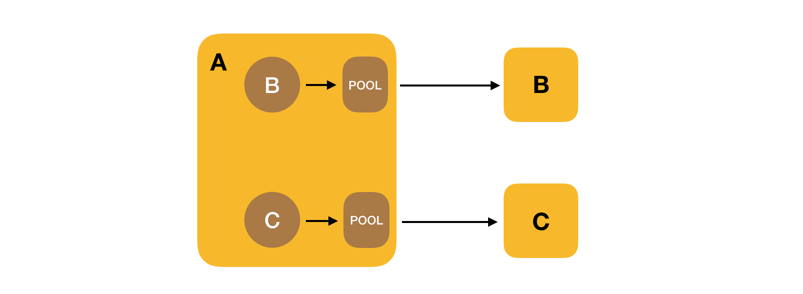

记一次连接池问题排查
最近排查了一个问题，是关于连接池的，服务的整体情况如下：
A 服务是向外提供的 Http 服务，然后 A 服务中会调用 B 和 C，B 和 C 是两个 RPC 服务。 A 服务中通过 B 和 C 提供的 Client 来分别访问这两个服务。
RPC 服务的 Client 创建会比较耗时间，因为需要从 ZK 上去获取服务的注册信息并初始化。所以一般会创建一个 Client 的连接池 ClientPool，所有的 Client 都从 ClientPool 中获取，类似在数据连接池中获取数据库连接。
最近服务出现了一个问题，在正常访问下，服务运行正常，服务的响应时间基本在 50 ms上下，当整体 qps 在 20000 左右的时候，就开始出现大量的请求响应很慢甚至超时。
分别检查的 B 和 C 的服务器资源，各机器服务都正常，日志里面也没有发现异常，IO 和网络也是正常的，说明问题不在服务端。
然后检查 A 服务的日志，发现大量的请求卡在从 CilentPool 中获取 Client，在高峰情况下，甚至会耗费差不多 10 秒，很多的请求无法获取到 Client 连接，问题就出在这里。
既然已经是从连接池中获取连接，为什么还是会出现这种情况？
看了一下连接池的源码，发现默认情况下进程会共享一个连接池实例，也就是说 B 和 C 的 Client 都要从这个连接池中获取，连接池又是按照单个 RPC 服务来设置的，所以就会出现连接池中可用的 Clent 数量不足。也就是下图这样的：
解决的办法有两个，一个是调大整个进程 ClientPool 的大小，但是这样还是会发生抢占，而且连接池设置的太大也不合适。另外一种方式就是为每个 Client 创建单独的线程池，这样每个服务的 Client 的数量可以有保证，也不会发生抢占的情况。也就是下面这样：

那么如何来为每个 RPC 服务都维护一个 ClientPool 呢，其实就是通过 ConcurrentHashMap 来为每个 RPC 服务维护一个连接池，key 是 RPC 服务的名称。
如果进程中共用一个连接池，在某些请求被阻塞的情况下，就会持续占据线程池的资源，而影响其他服务的访问。这也是造成这次问题的原因，单纯调大连接池的数量不能完全避免服务之间对连接的竞争。
通过为每个服务创建单独的连接池，将每个服务访问都进行了隔离，即使单个服务的请求出现问题也不会影响到其他的服务请求，在高流量的情况下更稳定。